Signed Toki Pona
as it appears in Toki Pona: The Language of Good by Sonja Lang, the creator of toki ponaSigned Toki Pona (toki pona luka) is a silent version of Toki Pona that uses hand gestures. This can be useful, for example:
- in a quiet library or house of worship,
- during covert ninja operations,
- diving underwater for treasure, or
- while taunting rival Lojbanists with gang signs.
Each word and letter has its own sign. To form a sentence, perform each sign, one after an other, using the same grammar and word order you already know.
Elements of a Sign
Each sign can be described using four elements:
- hand shape
- location on the body
- palm orientation
- whether one hand or both hands
Hand Shapes
There are nine basic hand shapes used in Signed Toki Pona. These describe the right hand.
| 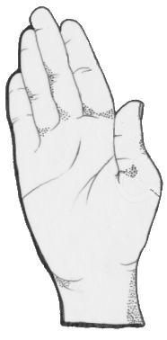 | 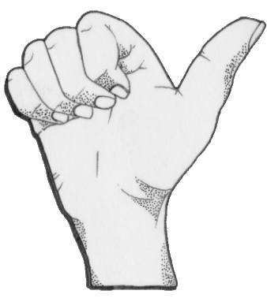 | 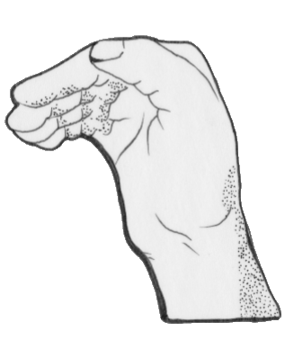 |
| flat hands | thumb-fist | bent hand |
| 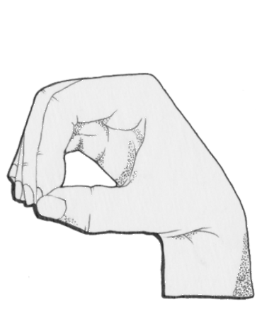 | 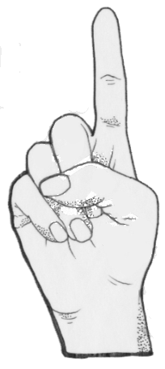 | 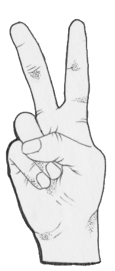 |
| O hand | 1 hand | 2 hand |
| 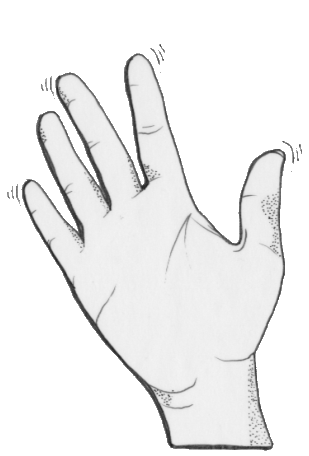 | 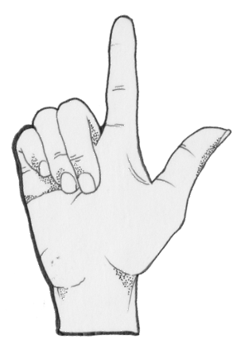 | 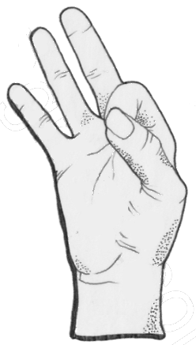 |
| wiggling hand (fingers moving) | L hand | F hand |
Locations on the Body
For each sign, the right hand goes to a particular location.
- in front of chest
- at side of forehead
- at side of chin
- at left shoulder
- at left elbow
- on top of left fist
- on stomach
- under left slanted forearm
Orientations
Most signs are described by the direction that the palm of the right hand faces. A few signs are described by the orientation that a particular finger points.
- left
- up
- down
- forward
- back
One Hand or Both Hands
By default, perform a sign by placing your right hand in the given shape, location and palm orientation.
When a sign is described as "both hands", place your right hand as described. Then mirror the same gesture with your left hand.
Examples
| 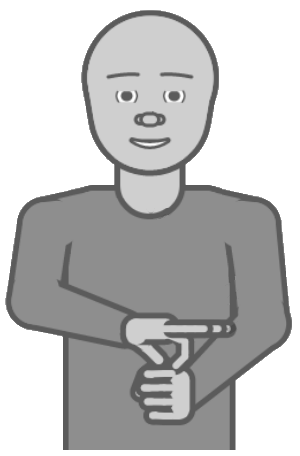 | 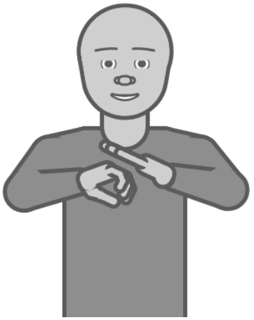 |
| kasi F hand on top of left fist, palm facing down | o (letter> O hand under left slanted forearm, palm facing down |
| 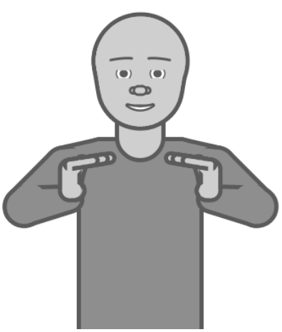 | 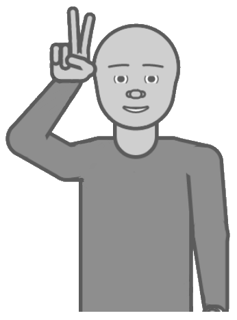 |
| tomo bent hand in front of chest, palm facing left (both hands) | suli 2 hand at side of forehead, palm facing forward |
Descriptions of Signs
| a or kin |
| flat hand at side of chin, palm facing left |
| akesi |
| 2 hand at left elbow, palm facing back |
| ala |
| flat hand at left shoulder, palm facing down |
| alasa |
| 1 hand at left shoulder, palm facing back |
| ale or ali |
| wiggling hand in front of chest, palm facing forward (both hands) |
| anpa |
| bent hand in front of chest, palm facing down |
| ante |
| bent hand on top of left fist, palm facing left |
| anu |
| L hand in front of chest, palm facing down |
| awen |
| L hand at left shoulder, palm facing back |
| e |
| flat hand in front of chest, palm facing down |
| en |
| L hand on top of left fist, palm facing down |
| esun |
| bent hand in front of chest, palm facing up (both hands) |
| ijo |
| thumb-fist in front of chest, palm facing down, thumb pointing left |
| ike |
| thumb-fist in front of chest, palm facing forward |
| ilo |
| thumb-fist on top of left fist, palm facing up |
| insa |
| L hand on stomach, palm facing back |
| jaki |
| thumb-fist at side of chin, palm facing forward |
| jan |
| 2 hand at left shoulder, palm facing back |
| jelo |
| F hand on stomach, palm facing down |
| jo |
| bent hand on top of left fist, palm facing up |
| kala |
| flat hand at left elbow, palm facing back |
| kalama |
| wiggling hand at side of chin, palm facing left |
| kama |
| bent hand in front of chest, palm facing back |
| kasi |
| F hand on top of left fist, palm facing down |
| ken |
| thumb-fist at left shoulder, palm facing back |
| kepeken |
| L hand on top of left fist, palm facing left |
| kili |
| thumb-fist at side of chin, palm facing left |
| kiwen |
| thumb-fist on top of left fist, palm facing down |
| ko |
| bent hand on stomach, palm facing down |
| kon |
| wiggling hand in front of chest, palm facing left |
| kule |
| F hand in front of chest, palm facing left |
| kulupu |
| 2 hand at left shoulder, palm facing down |
| kute |
| thumb-fist at side of forehead, palm facing left |
| la |
| bent hand in front of chest, palm facing left |
| lape |
| flat hand at side of forehead, palm facing left |
| laso |
| F hand at left elbow, palm facing down |
| lawa |
| flat hand at side of forehead, palm facing forward |
| len |
| bent hand at left shoulder, palm facing back |
| lete |
| wiggling hand at left elbow, palm facing down |
| li |
| flat hand in front of chest, palm facing left |
| lili |
| 2 hand at side of chin, palm facing forward |
| linja |
| 1 hand at side of forehead, palm facing left |
| lipu |
| flat hand on top of left fist, palm facing up |
| loje |
| F hand at side of chin, palm facing left |
| lon |
| 1 hand on top of left fist, palm facing down |
| luka |
| flat hand in front of chest, palm facing forward |
| lukin or oko |
| 2 hand in front of chest, palm facing down |
| lupa |
| O hand in front of chest, palm facing left |
| ma |
| flat hand in front of chest, palm facing down (both hands) |
| mama |
| 2 hand on stomach, palm facing down |
| mani |
| thumb-fist at left elbow, palm facing back |
| meli |
| 2 hand on stomach, palm facing back |
| mi |
| thumb-fist in front of chest, palm facing down, thumb pointing back |
| mije |
| 2 hand on top of left fist, palm facing left |
| moku |
| O hand at side of chin, palm facing back |
| moli |
| L hand at side of forehead, palm facing back |
| monsi |
| L hand in front of chest, palm facing forward |
| mu |
| wiggling hand at side of chin, palm facing down |
| mun |
| O hand at side of forehead, palm facing left |
| musi |
| wiggling hand at side of forehead, palm facing left |
| mute |
| flat hand in front of chest, palm facing forward (both hands) |
| nanpa |
| 2 hand in front of chest, palm facing back |
| nasa |
| thumb-fist at side of forehead, palm facing forward |
| nasin |
| flat hand in front of chest, palm facing left (both hands) |
| nena |
| bent hand on top of left fist, palm facing down |
| ni |
| L hand at side of chin, palm facing back |
| nimi |
| nothing under left slanted forearm |
| noka |
| flat hand in front of chest, palm facing back |
| o |
| wiggling hand in front of chest, palm facing down |
| olin |
| wiggling hand on stomach, palm facing back |
| ona |
| 1 hand in front of chest, index finger pointing left |
| open |
| O hand at left shoulder, palm facing down |
| pakala |
| thumb-fist on top of left fist, palm facing forward |
| pali |
| thumb-fist on top of left fist, palm facing left |
| palisa |
| O hand on top of left fist, palm facing left |
| pan |
| F hand at side of chin, palm facing back |
| pana |
| wiggling hand in front of chest, palm facing up |
| pi |
| O hand in front of chest, palm facing forward |
| pilin |
| F hand on stomach, palm facing back |
| pimeja |
| F hand at left shoulder, palm facing down |
| pini |
| O hand at left shoulder, palm facing up |
| pipi |
| 1 hand at left elbow, palm facing back |
| poka |
| L hand at left elbow, palm facing back |
| poki |
| O hand in front of chest, palm facing down |
| pona |
| thumb-fist in front of chest, palm facing left, thumb pointing up |
| pu |
| wiggling hand on top of left fist, palm facing up |
| sama |
| thumb-fist in front of chest, palm facing down (both hands) |
| seli |
| wiggling hand at left shoulder, palm facing down |
| selo |
| F hand at left elbow, palm facing back |
| seme |
| flat hand in front of chest, palm facing up |
| sewi |
| 1 hand in front of chest, palm facing left, index finger pointing up |
| sijelo |
| flat hand on stomach, palm facing back |
| sike |
| O hand on top of left fist, palm facing down |
| sin or namako |
| wiggling hand on top of left fist, palm facing left |
| sina |
| 1 hand in front of chest, index finger pointing forward |
| sinpin |
| L hand in front of chest, palm facing back (both hands) |
| sitelen |
| F hand in front of chest, palm facing left (both hands) |
| sona |
| bent hand at side of forehead, palm facing left |
| soweli |
| flat hand at left elbow, palm facing down |
| suli |
| 2 hand at side of forehead, palm facing forward |
| suno |
| bent hand at side of forehead, palm facing forward |
| supa |
| flat hand in front of chest, palm facing up (both hands) |
| suwi |
| 2 hand at side of chin, palm facing left |
| tan |
| bent hand at left elbow, palm facing back |
| taso |
| L hand in front of chest, palm facing down (both hands) |
| tawa |
| bent hand in front of chest, palm facing forward |
| telo |
| wiggling hand in front of chest, palm facing down (both hands) |
| tenpo |
| F hand on top of left fist, palm facing left |
| toki |
| bent hand at side of chin, palm facing left |
| tomo |
| bent hand in front of chest, palm facing left (both hands) |
| tu |
| 2 hand in front of chest, palm facing forward |
| unpa |
| 2 hand on top of left fist, palm facing down |
| uta |
| 1 hand at side of chin, palm facing back |
| utala |
| thumb-fist at left shoulder, palm facing forward |
| walo |
| F hand at side of forehead, palm facing down |
| wan |
| 1 hand in front of chest, palm facing forward, index finger pointing up |
| waso |
| O hand at side of chin, palm facing forward |
| wawa |
| thumb-fist on stomach, palm facing back |
| weka |
| O hand at left elbow, palm facing down |
| wile |
| O hand on stomach, palm facing up |
Alphabet
To spell out a proper name, use these letters. All letter signs are performed under the left slanted forearm.
| a |
| thumb-fist, palm facing back |
| e |
| flat hand, palm facing back |
| i and j |
| 1 hand, palm facing down |
| k |
| bent hand, palm facing down |
| l |
| L hand, palm facing back |
| m |
| wiggling hand, palm facing back |
| n |
| wiggling hand, palm facing down |
| o |
| O hand, palm facing down |
| p |
| F hand, palm facing down |
| s |
| thumb-fist, palm facing down |
| t |
| flat hand, palm facing down |
| u and w |
| 2 hand, palm facing back |